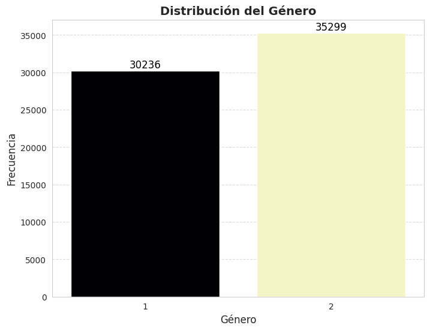
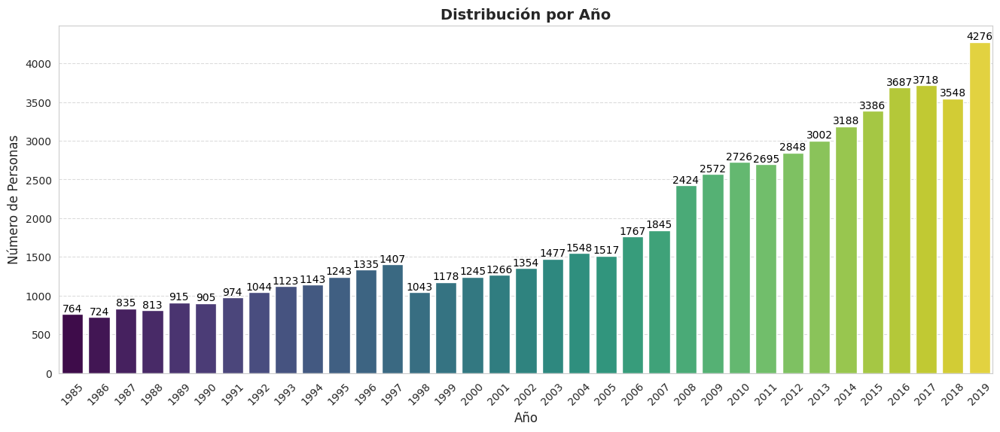
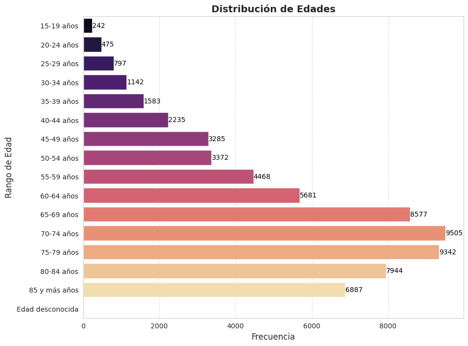
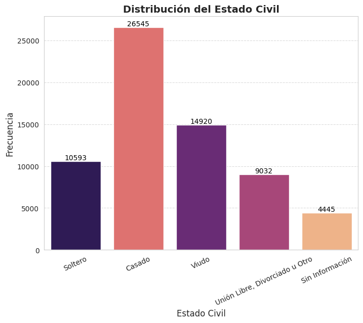
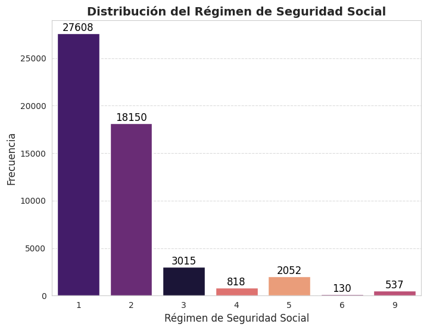

Análisis exploratorio de los datos#
import pandas as pd
import numpy as np
import matplotlib.pyplot as plt
import seaborn as sns
filepath = "COLON_RECTO_ANO (1).xlsx"
df = pd.read_excel(filepath)
df.shape
(65535, 47)
df.head(5)
| COD_DPTO | COD_MUNIC | A_DEFUN | SIT_DEFUN | COD_INST | NOM_INST | ANO | MES | SEXO | EST_CIVIL | ... | C_ANT32 | C_PAT1 | C_PAT2 | C_BAS1 | C_MCM1 | IDPROFCER | CAUSA_666_667 | CAU_HOMOL | QUINQ | EDAD2 | |
|---|---|---|---|---|---|---|---|---|---|---|---|---|---|---|---|---|---|---|---|---|---|
| 0 | 76 | 364 | 1 | 2 | 2006 | 02 | 1 | 1 | ... | C189 | 202 | 14 | 05A09 | 15a19 | |||||||
| 1 | 76 | 109 | 1 | 1 | 761090395501 | E.S.E. HOSPITAL DEPARTAMENTAL DE BU | 2006 | 05 | 2 | 1 | ... | C189 | 202 | 14 | 05A09 | 15a19 | |||||
| 2 | 66 | 1 | 1 | 1 | 660010079601 | CL PIO XII | 2006 | 05 | 2 | 3 | ... | C187 | 202 | 14 | 05A09 | 15a19 | |||||
| 3 | 63 | 1 | 1 | 1 | 630010031901 | CL CENTRAL DEL QUINDIO | 2006 | 10 | 2 | 4 | ... | C189 | C189 | 202 | 14 | 05A09 | 15a19 | ||||
| 4 | 11 | 1 | 1 | 1 | 1100114771 | FUNDA SANTA FE | 2006 | 08 | 2 | 2 | ... | C189 | 202 | 14 | 05A09 | 15a19 |
5 rows × 47 columns
etiquetas_sit_defun = {1: "Hospital o Clínica", 2: "Casa", 3: "Otro Sitio", 4: "Sin Información"}
df["SIT_DEFUN_LABEL"] = df["SIT_DEFUN"].map(etiquetas_sit_defun)
sns.set_style("whitegrid")
plt.figure(figsize=(10, 6))
ax = sns.countplot(x="SIT_DEFUN_LABEL", data=df, hue="SIT_DEFUN_LABEL", palette="magma_r",
order=etiquetas_sit_defun.values(), legend=False)
for p in ax.patches:
ax.annotate(f'{int(p.get_height())}',
(p.get_x() + p.get_width() / 2., p.get_height()),
ha='center', va='bottom', fontsize=10, color='black')
plt.title("Distribución de Sitios de Defunción", fontsize=14, fontweight="bold")
plt.xlabel("Sitio de Defunción", fontsize=12)
plt.ylabel("Frecuencia", fontsize=12)
plt.xticks(rotation=0)
plt.grid(axis='y', linestyle='--', alpha=0.7)
plt.show()

sns.set_style("whitegrid")
plt.figure(figsize=(8, 6))
ax = sns.countplot(x="pman_muer", data=df, hue="pman_muer", palette="magma", legend=False)
for p in ax.patches:
ax.annotate(f'{int(p.get_height())}',
(p.get_x() + p.get_width() / 2., p.get_height()),
ha='center', va='bottom', fontsize=12, color='black')
plt.title("Distribución del Género", fontsize=14, fontweight="bold")
plt.xlabel("Género", fontsize=12)
plt.ylabel("Frecuencia", fontsize=12)
plt.xticks(rotation=0)
plt.grid(axis='y', linestyle='--', alpha=0.7)
plt.show()
---------------------------------------------------------------------------
NameError Traceback (most recent call last)
<ipython-input-1-693446bdb475> in <cell line: 0>()
----> 1 sns.set_style("whitegrid")
2 plt.figure(figsize=(8, 6))
3 ax = sns.countplot(x="pman_muer", data=df, hue="pman_muer", palette="magma", legend=False)
4 for p in ax.patches:
5 ax.annotate(f'{int(p.get_height())}',
NameError: name 'sns' is not defined
sns.set_style("whitegrid")
plt.figure(figsize=(8, 6))
ax = sns.countplot(x="SEXO", data=df, hue="SEXO", palette="magma", legend=False)
for p in ax.patches:
ax.annotate(f'{int(p.get_height())}',
(p.get_x() + p.get_width() / 2., p.get_height()),
ha='center', va='bottom', fontsize=12, color='black')
plt.title("Distribución del Género", fontsize=14, fontweight="bold")
plt.xlabel("Género", fontsize=12)
plt.ylabel("Frecuencia", fontsize=12)
plt.xticks(rotation=0)
plt.grid(axis='y', linestyle='--', alpha=0.7)
plt.show()

1: Masculino — 2: Femenino
etiquetas_edu = {
1: "Preescolar", 2: "Primaria", 3: "Secundaria",
4: "Superior", 5: "Ninguno", 9: "Sin Información"
}
df["NIVEL_EDU_LABEL"] = df["NIVEL_EDU"].map(etiquetas_edu)
sns.set_style("whitegrid")
plt.figure(figsize=(8, 6))
ax = sns.countplot(x="NIVEL_EDU_LABEL", data=df, hue="NIVEL_EDU_LABEL", palette="magma",
order=etiquetas_edu.values(), legend=False)
for p in ax.patches:
ax.annotate(f'{int(p.get_height())}',
(p.get_x() + p.get_width() / 2., p.get_height()),
ha='center', va='bottom', fontsize=10, color='black')
plt.title("Distribución del Nivel Educativo", fontsize=14, fontweight="bold")
plt.xlabel("Nivel Educativo", fontsize=12)
plt.ylabel("Frecuencia", fontsize=12)
plt.xticks(rotation=30)
plt.grid(axis='y', linestyle='--', alpha=0.7)
plt.show()
plt.figure(figsize=(16, 6))
ax = sns.countplot(x="ANO", data=df,hue="ANO", palette="viridis", legend=False)
for p in ax.patches:
ax.annotate(f'{int(p.get_height())}',
(p.get_x() + p.get_width() / 2., p.get_height()),
ha='center', va='bottom', fontsize=10, color='black')
plt.title("Distribución por Año", fontsize=14, fontweight="bold")
plt.xlabel("Año", fontsize=12)
plt.ylabel("Número de Personas", fontsize=12)
plt.xticks(rotation=45)
plt.grid(axis='y', linestyle='--', alpha=0.7)
plt.show()

etiquetas_edades = {
10: "15-19 años", 11: "20-24 años", 12: "25-29 años", 13: "30-34 años",
14: "35-39 años", 15: "40-44 años", 16: "45-49 años", 17: "50-54 años",
18: "55-59 años", 19: "60-64 años", 20: "65-69 años", 21: "70-74 años",
22: "75-79 años", 23: "80-84 años", 24: "85 y más años", 25: "Edad desconocida"
}
df["EDAD_LABEL"] = df["gru_ed1"].map(etiquetas_edades)
sns.set_style("whitegrid")
plt.figure(figsize=(10, 8))
ax = sns.countplot(y="EDAD_LABEL", data=df, hue="EDAD_LABEL", palette="magma",
order=etiquetas_edades.values(), legend=False)
for p in ax.patches:
ax.annotate(f'{int(p.get_width())}',
(p.get_width(), p.get_y() + p.get_height() / 2.),
ha='left', va='center', fontsize=10, color='black')
plt.title("Distribución de Edades", fontsize=14, fontweight="bold")
plt.xlabel("Frecuencia", fontsize=12)
plt.ylabel("Rango de Edad", fontsize=12)
plt.grid(axis='x', linestyle='--', alpha=0.7)
plt.show()

etiquetas_est_civil = {
1: "Soltero", 2: "Casado", 3: "Viudo",
4: "Unión Libre, Divorciado u Otro", 5: "Sin Información"
}
df["EST_CIVIL_LABEL"] = df["EST_CIVIL"].map(etiquetas_est_civil)
sns.set_style("whitegrid")
plt.figure(figsize=(8, 6))
ax = sns.countplot(x="EST_CIVIL_LABEL", hue="EST_CIVIL_LABEL",data=df, palette="magma",
order=etiquetas_est_civil.values())
for p in ax.patches:
ax.annotate(f'{int(p.get_height())}',
(p.get_x() + p.get_width() / 2., p.get_height()),
ha='center', va='bottom', fontsize=10, color='black')
plt.title("Distribución del Estado Civil", fontsize=14, fontweight="bold")
plt.xlabel("Estado Civil", fontsize=12)
plt.ylabel("Frecuencia", fontsize=12)
plt.xticks(rotation=25)
plt.grid(axis='y', linestyle='--', alpha=0.7)
plt.show()

sns.set_style("whitegrid")
plt.figure(figsize=(8, 6))
ax = sns.countplot(x="SEG_SOCIAL", data=df,hue="SEG_SOCIAL", palette="magma", legend=False, order=[1, 2, 3, 4, 5, 6, 9])
for p in ax.patches:
ax.annotate(f'{int(p.get_height())}',
(p.get_x() + p.get_width() / 2., p.get_height()),
ha='center', va='bottom', fontsize=12, color='black')
plt.title("Distribución del Régimen de Seguridad Social", fontsize=14, fontweight="bold")
plt.xlabel("Régimen de Seguridad Social", fontsize=12)
plt.ylabel("Frecuencia", fontsize=12)
plt.xticks(rotation=0)
plt.grid(axis='y', linestyle='--', alpha=0.7)
plt.show()

Contributivo
Subsidiado
Vinculado
Particular
Otro
Ignorado
Sin información
print("\nDistribución por Grupo Etnico:")
print(df["IDPERTET"].value_counts())
Distribución por Grupo Etnico:
IDPERTET
6 35103
27465
9 1396
5 1296
1 203
2 38
3 25
4 9
Name: count, dtype: int64
Indígena
Rom (Gitano)
Raizal del archipielago de San Andres y Providencia
Palenquero de San Basilio
Negro(a), mulato(a), afrocolombiano(a) o afrodescendiente
Ninguno de las anteriores
Sin infornmación